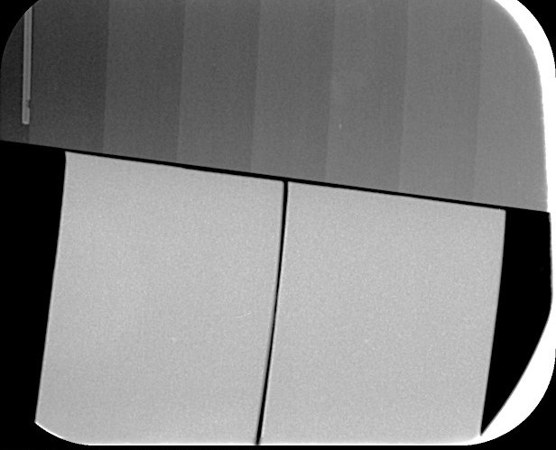

Electrophoretic depositionDeposición electroforética
An electric field drives charged PEEK and bismuth-containing borate glass particles onto a 3D-printed titanium alloy implant.Un campo eléctrico arrastra partículas cargadas de PEEK y de vidrio de borato con bismuto hacia un implante de aleación de titanio impreso en 3D.
The techniqueLa técnica
 Surfaces and cross-sections of the PEEK/borate glass coatings.Superficies y secciones de los recubrimientos de PEEK y vidrio de borato. RADIOBIOCOATS, FunGlass. © TnUAD.
Surfaces and cross-sections of the PEEK/borate glass coatings.Superficies y secciones de los recubrimientos de PEEK y vidrio de borato. RADIOBIOCOATS, FunGlass. © TnUAD.Electrophoretic deposition works at room temperature and coats complex shapes, such as 3D-printed implants. PEEK, a polymer already used in implants, forms the matrix that holds the bismuth-containing borate glass.La deposición electroforética trabaja a temperatura ambiente y recubre formas complejas, como implantes impresos en 3D. El PEEK, un polímero ya usado en implantes, forma la matriz que sujeta el vidrio de borato con bismuto.
A short heat treatment then consolidates the composite coating on the metal.Después, un breve tratamiento térmico consolida el recubrimiento compuesto sobre el metal.

Impactful resultsResultados destacados



All radiographsTodas las radiografíasIn vitro testsEnsayos in vitroOther techniquesOtras técnicas